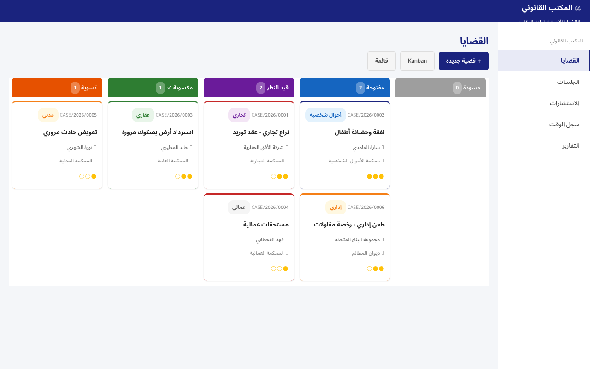
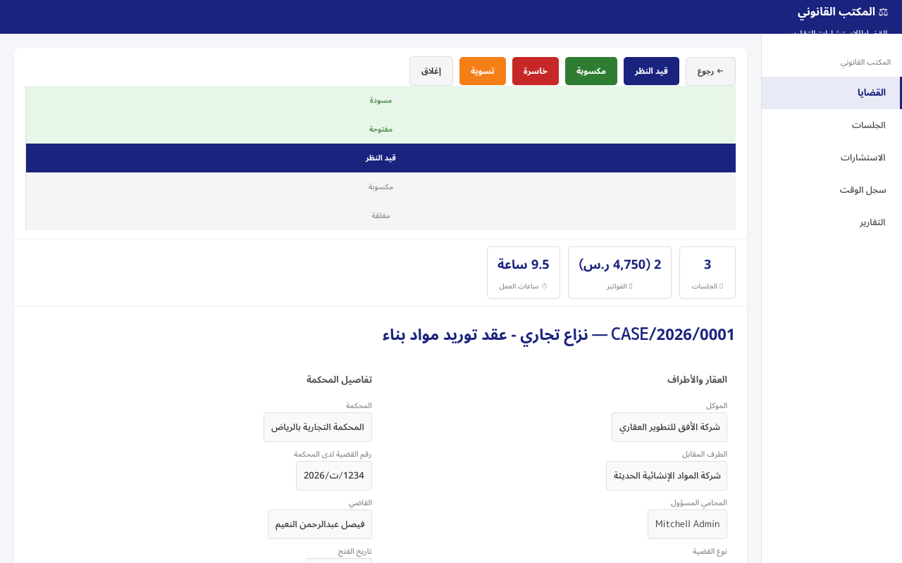
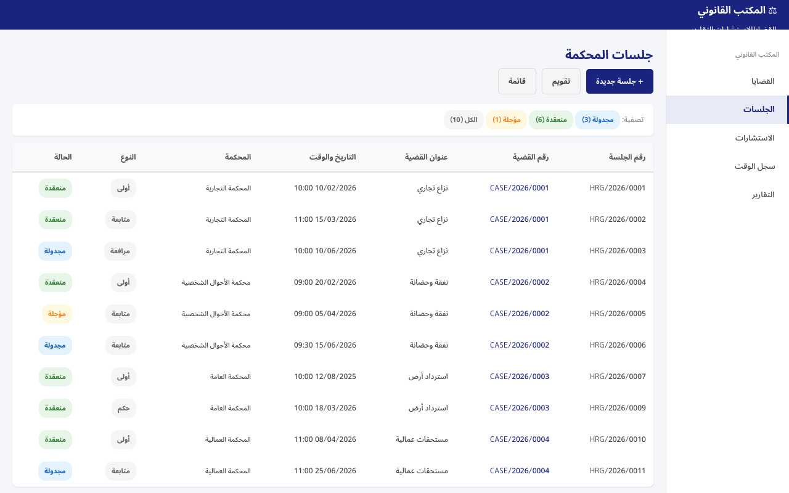
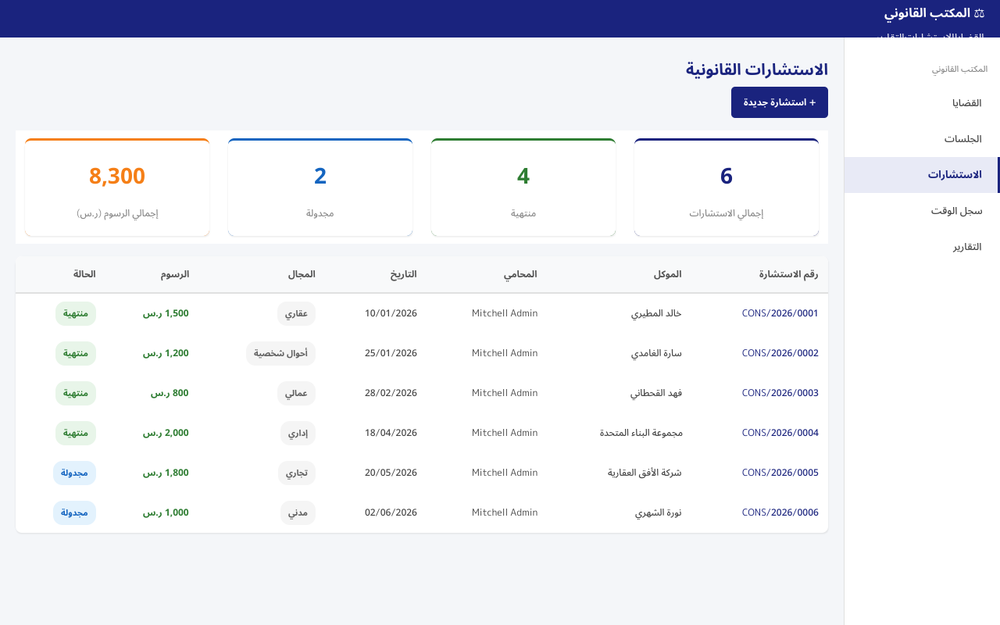
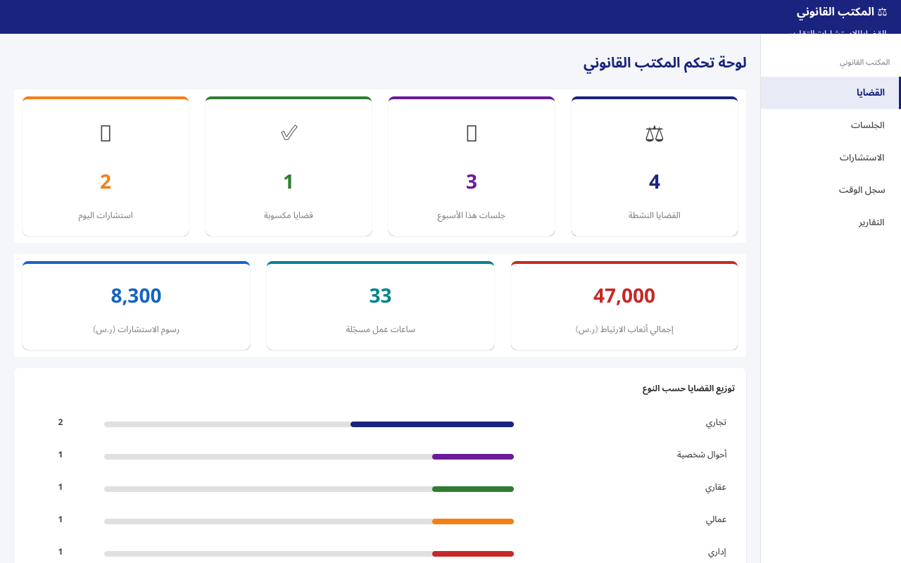
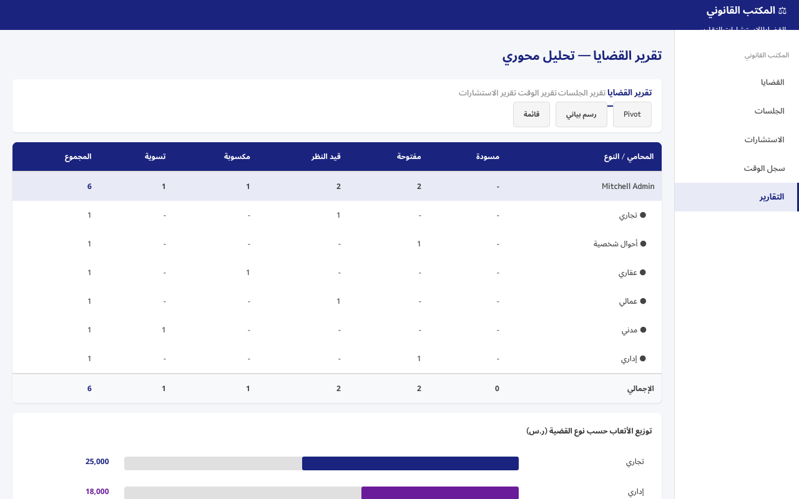

نظام متكامل لإدارة القضايا، الجلسات، الاستشارات، وتتبع ساعات العمل للمكاتب القانونية
الإصدار 19.0.1.0.0 — Odoo 19تتبع كامل للقضايا بجميع أنواعها: مدني، جنائي، تجاري، أحوال شخصية، عمالي، عقاري، إداري
جدولة جلسات المحكمة مع تقويم تفاعلي وتسجيل النتائج وتحديد موعد الجلسة القادمة
إدارة الاستشارات مع العملاء الجدد وإصدار الفواتير مباشرة وتحويلها لقضايا
تسجيل الساعات القابلة للفوترة لكل قضية مع حساب تلقائي وإنشاء فواتير بنقرة واحدة
إنشاء فواتير احترافية من ساعات العمل والاستشارات مع تكامل كامل مع نظام المحاسبة
تقارير محورية وبيانية وPDF لتحليل الأداء والإيرادات وتوزيع القضايا حسب النوع






تسجيل استشارة الموكل وتقييم القضية
إنشاء ملف القضية وتحديد المحكمة والمحامي
جدولة وتسجيل نتائج جلسات المحكمة
تحويل ساعات العمل إلى فواتير للموكل
تسجيل النتيجة النهائية وأرشفة الملف